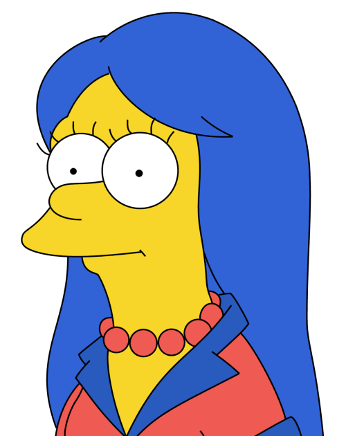

Preencha o campo com um e-mail válido, assim poderemos entrar em contato com você para informar o resultado do nosso concurso.
Pseudos elementos
O problema com citações na Internet é que você não pode confirmar a sua veracidade.
TNT

- Um
- Dois
- Três
- Quatro
Um gradiente azul clássico, utilizando 2 tons similares.
Uma versão inversa do gradiente azul.
Combinando "top" e "right" para a direção.
Utilizando posições específicas para as cores.
Pagamento recusado
Produto enviado Em aprovaçãoHow I Met Your Mother

A série gira em torno da vida de Ted Mosby e dos seus amigos, que é narrada pelo próprio aos seus filhos, 25 anos mais tarde. Bob Saget, como Ted Mosby do futuro, conta então aos filhos as histórias e peripécias que o levaram a conhecer a mãe deles. As outras personagens principais são Marshall Eriksen, Robin Scherbatsky, Lily Aldrin e Barney Stinson.
Em 2005, aos 27 anos, o jovem Ted Mosby (Josh Radnor), após o seu melhor amigo, Marshall Eriksen (Jason Segel), ficar noivo, decide finalmente ir em busca da sua cara-metade. Com gestos românticos questionáveis, Ted conhece Robin Scherbatsky (Cobie Smulders), no bar que costumavam frequentar, Maclaren's Pub.
Position
Teste
Galeria de fotos
- Homer Simpson
-  Marge Simpson
 Bart Simpson
Bart Simpson- Mr. Burns